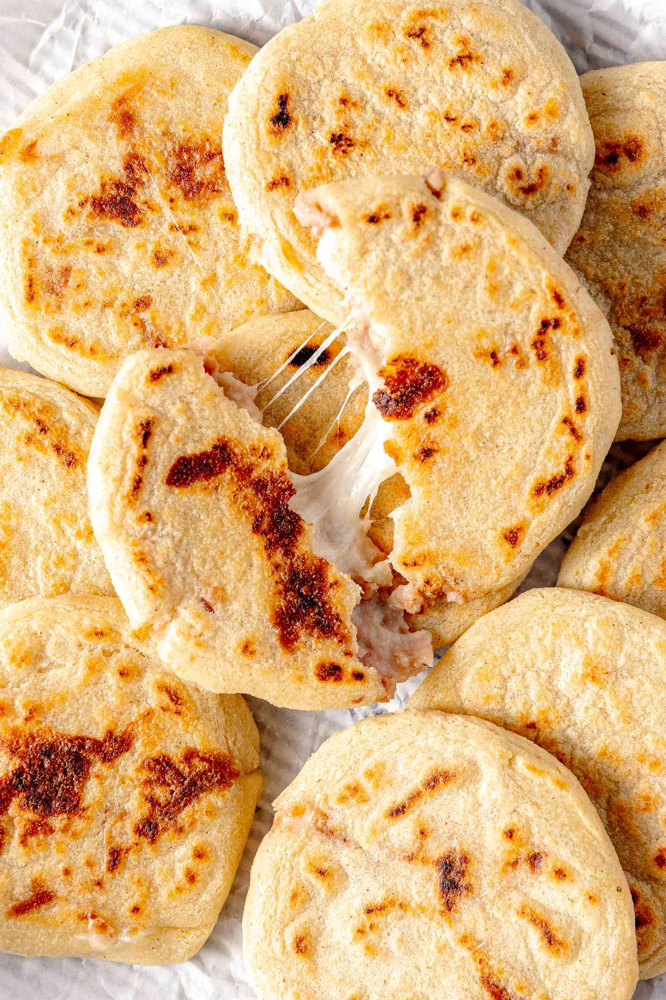

Pupusas Recipe

Ingredients
- 4 cups masa harina , white or yellow
- 3 1/2 - 4 cups warm water
- 1/2 teaspoon of salt
- 2 Tablespoons butter
- 1 teaspoon chicken bouillon paste
- 1 can refried beans
- 2 cups shredded mozzarella cheese
Steps
-
Add masa harina (corn flour) and salt to a large mixing bowl. Add the
warm water, little by little, mixing the dough with your hand. You may
not need all of the water. You want the masa to be the consistency of a
soft play dough. If the dough is too wet, mix in some more masa harina.
If it’s too dry, add a little more water. Mix in butter and chicken
bouillon, if using.
-
Scoop the dough into large, golf-ball-size portions. You can scoop all
of the dough into balls before continuing, or make 1 pupusa at a time.
Be sure to keep the dough covered with a damp cloth as you work, to keep
it from drying out.
-
Use the palms of your hands to pat the dough into a disc, about 4 inches
in diameter. Scoop about half a tablespoon of the beans and place it in
the center of the dough circle, followed by a pinch of shredded cheese.
-
Gently bring the edges of the dough up and around the filling, pinching
it closed into a ball. Gently pat the dough between your palms to form
it into a disc again. Be gentle so you do not have big cracks of filling
come through, but if you do have some, its fine! They do not need to be
perfect.
-
Heat a large un-greased skillet or pan over medium heat. Place pupusas
on the hot pan and cook for about 2-4 minutes on each side. You will
know the pupusas are ready to flip when the edges are set and the bottom
is lightly golden.
- Ready to serve!